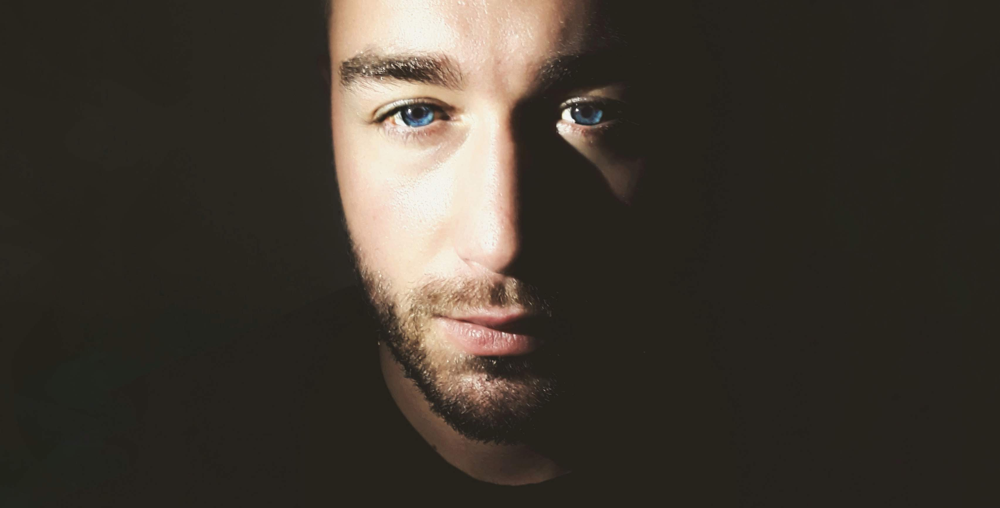

Maciej Mórawski - Strona domowa Zapraszam
Kim jestem?
Hej! Jestem poczatkującym i aspirującym programista frontend, na tej stronie chce pokazać Ci moja podróż w głąb nauki programowania. Moje wzloty i upadki, drogę jaka pokonam by zmienić swoje dotychczasowe życie. Na co dzień interesuje się szeroko postrzegana technologia, muzyka, uwielbiam robić zdjęcia otaczającego mnie świata. Moim hobby jest chodzenie po górach i sport w każdej możliwej odmianie. Witam Cię na mojej stronie, mam nadzieje, ze znajdziesz tutaj cos ciekawego dla siebie.